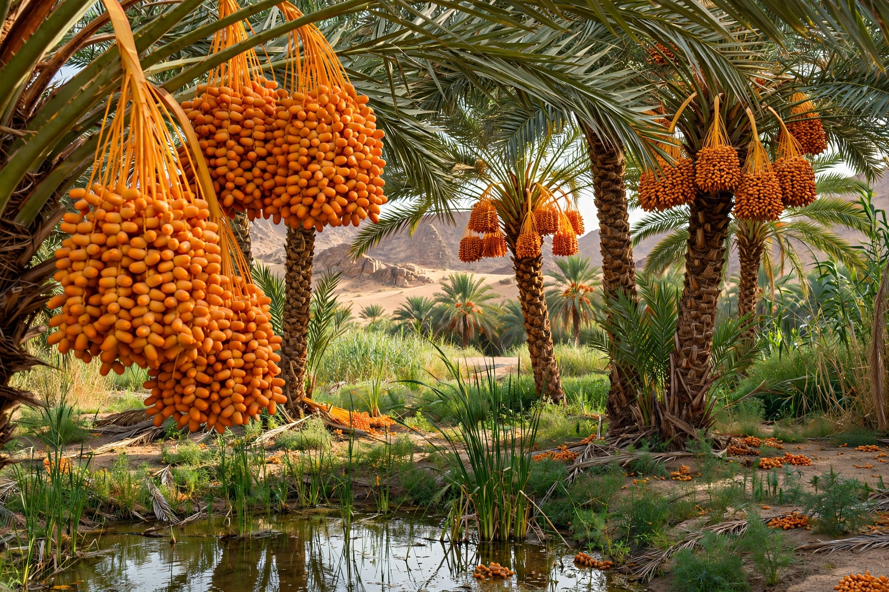

[Image placeholder: A date palm grove with ripening fruit clusters]The **date palm** (Phoenix dactylifera) is a palm tree cultivated for its sweet edible fruit, the date, and one of humanity's oldest crops — grown in Mesopotamia and the Nile valley for over 5,000 years and central to the oasis agriculture of North Africa and the Middle East. A mature palm stands 20–30 m tall with a crown of 4–6 m feather leaves, and bears fruit clusters that can yield 70 kg or more per tree per year.
Date palms are dioecious (male and female trees are separate) and are pollinated by hand in commercial groves; they propagate by offshoots to preserve varieties — famous cultivars include Medjool, Deglet Noor, Ajwa and Sukkari. Dates are a staple energy food, the traditional fast-breaking food of Ramadan, and a symbol of hospitality; nearly every part of the palm is used (fronds, fibre, trunk, seeds). Iraq, Egypt, Saudi Arabia, Iran and Algeria are among the great producers. The species probably descends from wild Phoenix palms of the Persian Gulf region.
Palms need fierce heat and water at their roots — the Arab proverb gives them 'their feet in water and their heads in the fire of heaven'. Fruit ripens through stages (kimri, khalal, rutab, tamr) and is eaten fresh-soft or dried. Red palm weevil is now the species' most dangerous pest worldwide.